Institutional Disruptions
To ensure internal validity of the analyses with the concept of institutional disruption, we focus on sudden and unpredictable, temporary shocks that created severe and systemic losses in the country market. The following were the steps taken to select disruptions:
- Baker and Bloom (2013) show that large terrorist attacks and natural catastrophes are associated with abnormal levels of market volatility and significantly explain GDP growth. Barro (2009) also includes epidemics as phenomena that have several times more welfare costs than frequent economic fluctuations. Accordingly, we identify large epidemics, natural disasters, and terrorist attacks as shocks whose effects are systemic to the country market (Aghion et al. 2017, Bloom et al. 2018, Kozeniauskas et al. 2018).
-
We collected data on these disruptions from different sources.
- We start by pulling all the data on shocks from the EM-DAT from the Centre for Research on the Epidemiology of Disasters that is supported by the World Health Organization and represents a comprehensive international database on catastrophes. EM-DAT records a shock if it meets at least one of the following criteria: 10 or more people killed, 100 or more people affected, a declaration of a state of emergency, or a call for international assistance. Further information can be accessed at http://www.emdat.be/.
- There are 4,273 shocks in the period 2007-2019 in the EM-DAT database. For each shock, we obtained data on human and economic loss from the United Nations Office for Coordination of Humanitarian Affairs (UNOCHA) and the reinsurance company Swiss RE.
- We build on Ballesteros and Gatignon (2019) to capture suddenness and unpredictability and select shocks whose end date is within 30 days of the start date. Close to 90 percent of firm responses to these shocks come within eight weeks of the start date when environmental uncertainty and causal ambiguity are high (Ballesteros and Kunreuther 2018, Bloom 2009). There are 3,822 events that classify as sudden shocks.
- To meet a stringent characterization of severity, we calculate the percentile distribution separately for each of the three variables of deaths, affected people, and economic damage by country for all disasters reported between 1997 and 2019 in EM-DAT. We use percentiles because the mean and standard deviations are inefficient location statistics given the skewness of the historic distribution of consequences.
- Following previous work that classifies disasters based on their impacts, we focus on severity values at the 99th percentile (Cavallo et al. 2013), and test the sensitivity at the 75th and 90th percentiles. Shocks that were in the 99th percentile of any one of the three separate percentile distributions of deaths, affected people, and economic damage were included as a severe disruption. See Table I for the cutoffs of each variable by country.
- At the 99th percentile of severity, there are 265 disruptions. Our analyses thus cover 129 countries representing the four levels of country income according to the World Bank as seen Graph below. Refer to https://datahelpdesk.worldbank.org/knowledgebase/articles/378833-how-are-the-income-group-thresholds-determined for information on how the World Bank defines these groups.
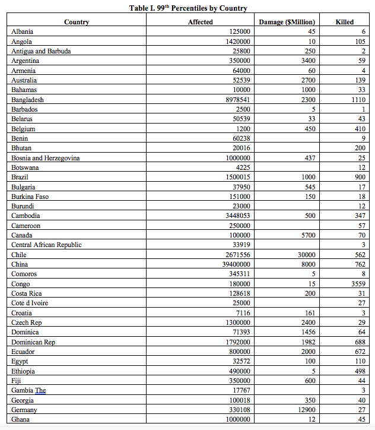
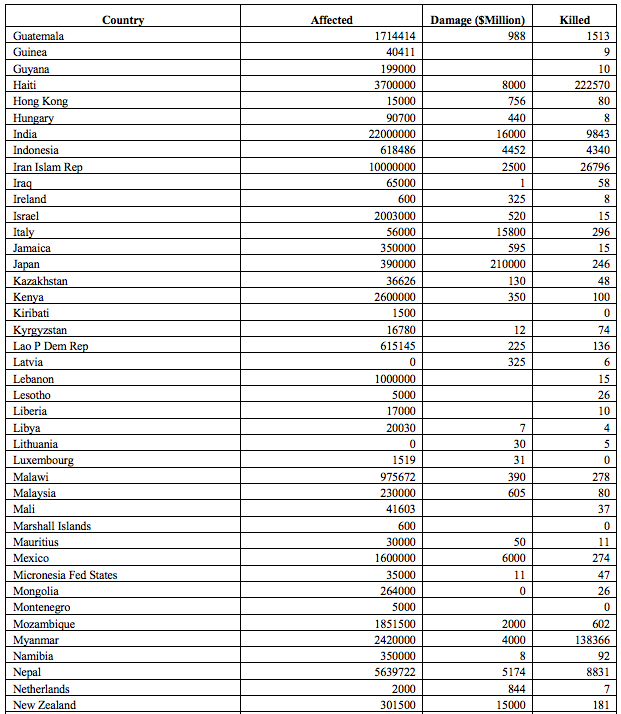 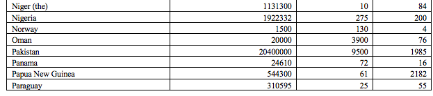
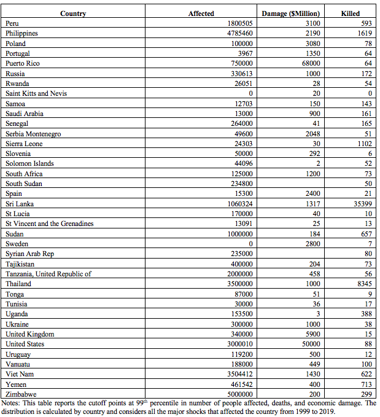
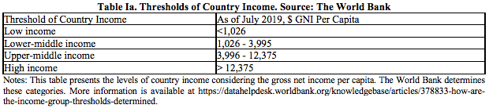
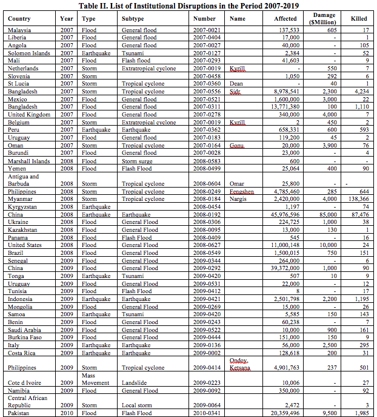
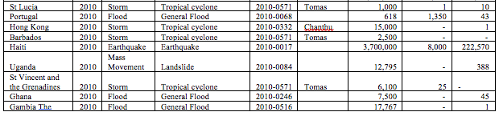
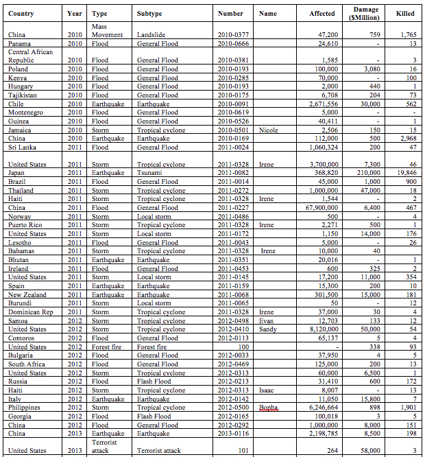
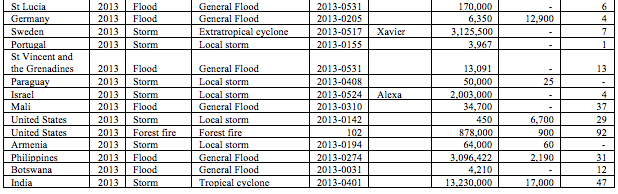
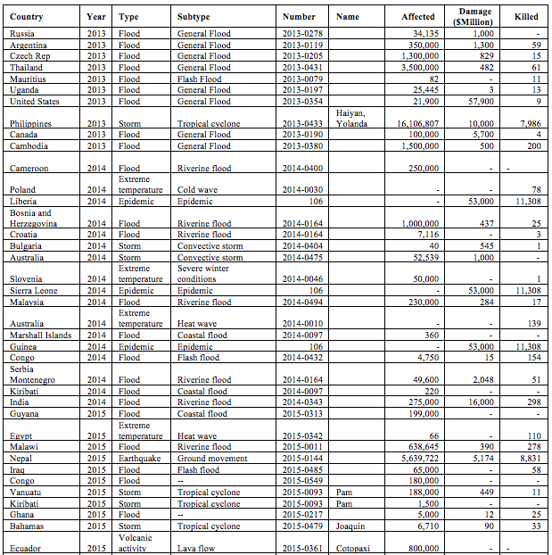
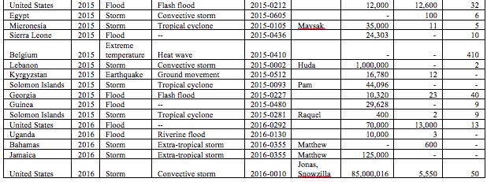
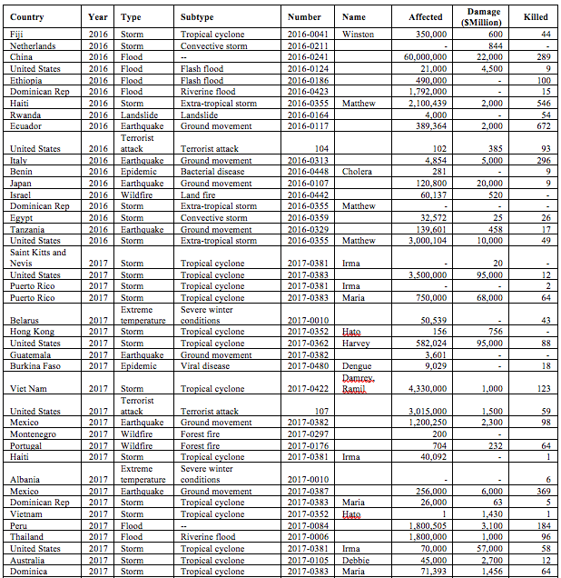
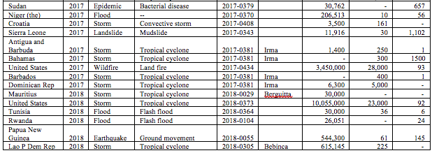
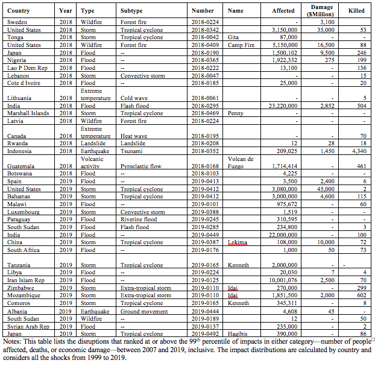